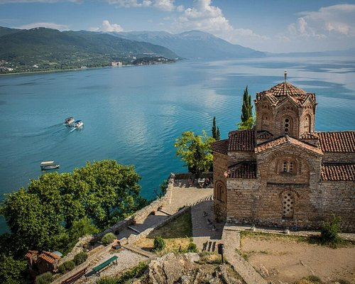
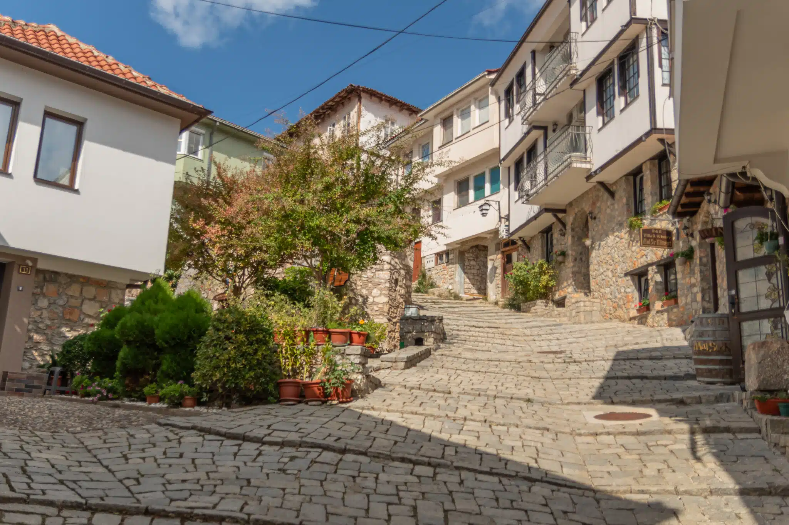
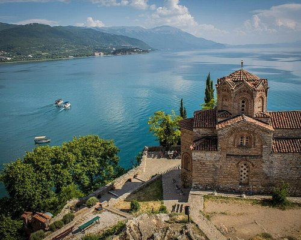
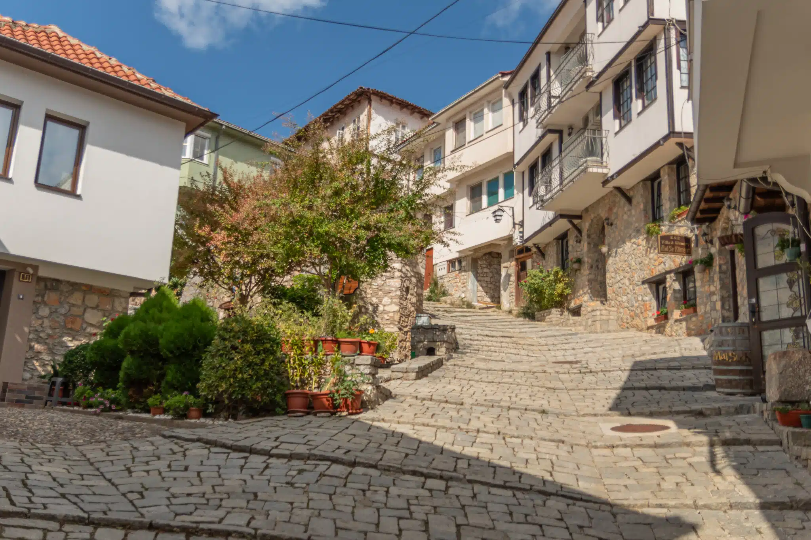
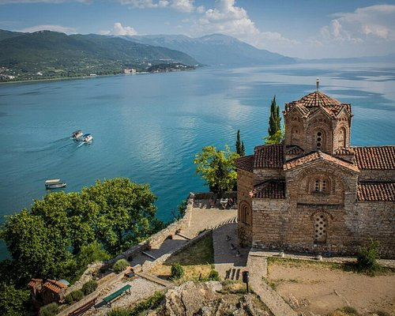
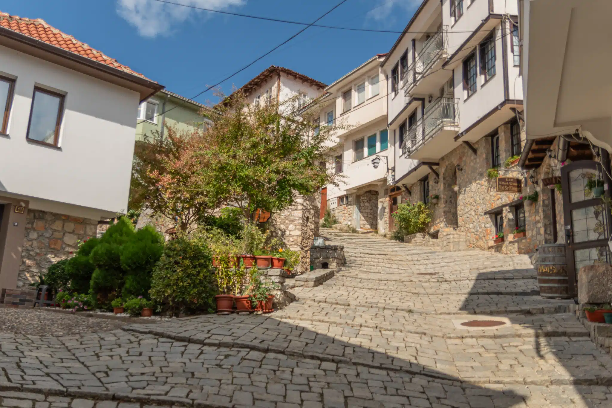

Lake Ohrid is among the most visited places in North Macedonia, and for good reason. It’s unbelievably beautiful, from the bustling town of Ohrid to the magnificently blue waters of the lake itself. As one of the oldest and deepest lakes in Europe, it’s hard not to feel the influence the lake has on the surrounding area. With its unique ecosystem, impressive Byzantine churches, and UNESCO status it’s one of the Balkans’ true highlights. I found everything about the lake to be captivating. But, I guess I’m not the only one. In 2010, NASA named one of Titan’s fearsome lakes after Ohrid.


Swimming in the cooling waters, with fish gently gliding underneath and a postcard view of Ohrid town in eyesight, is highly invigorating. They must have a filter hidden somewhere in the depths because the lake is impossibly clean. Either that or a full-time team of pool boys to rake out the leaves. Kidding aside, in the summer months you’ll find yourself jumping in a few times per day. Whether it’s from a wooden dock, alongside a lakeside restaurant, or at one of the many beaches, there’s always a place to pop into Lake Ohrid.
In the heart of Ohrid, before the Ohrid Boardwalk is the half-rock, half-concrete Saraiste Beach. Just past that, you’ll find two small beaches with nearby restaurants and wonderful views. The slender Potpesh Beach is the easternmost, offering a small patch of pebble beach accompanied by lounge chairs. If it’s too crowded for your liking, you can hop in the water by the nearby cemented dock. West of Potpesh Beach is Kaneo Beach, a small rocky area straddled by numerous restaurants. The majority of people entering Lake Ohrid from here do so before or after their meal.